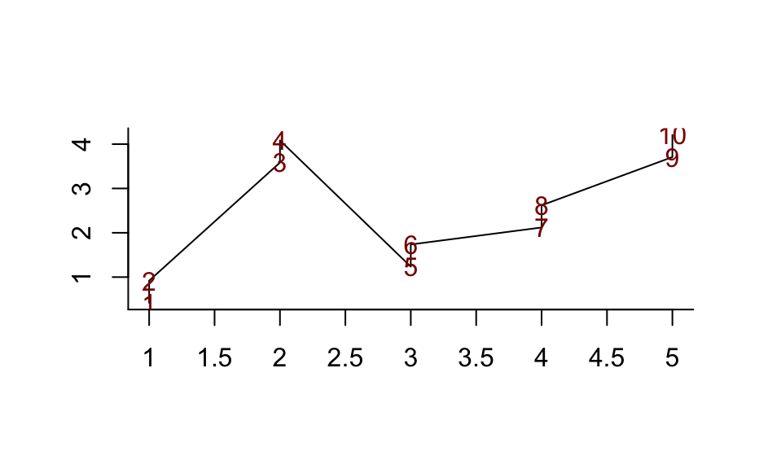
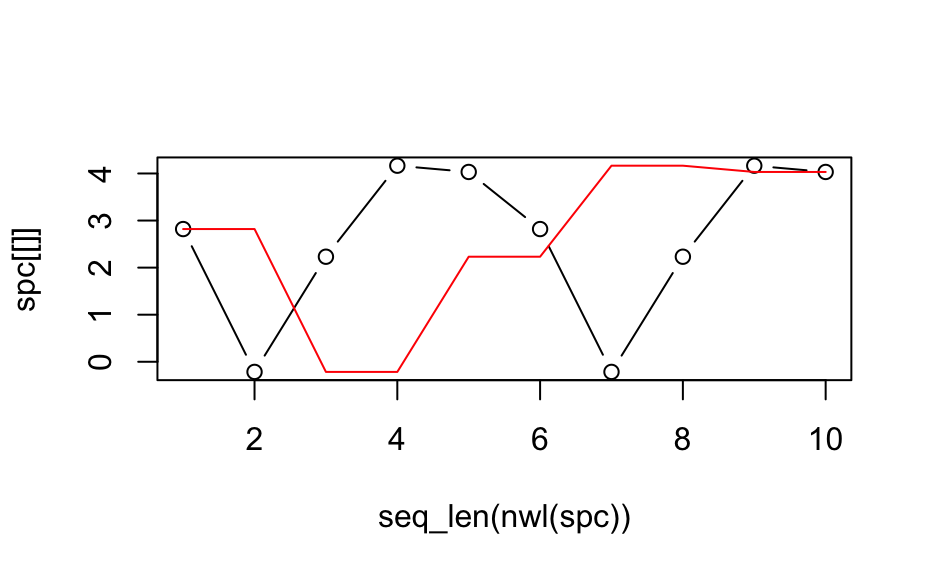

Rearranges the hyperSpec object so that the wavelength vector is in
increasing (or decreasing) order.
The wavelength vector is sorted and the columns of the spectra matrix are rearranged accordingly.
wl_sort(x, na.last = TRUE, decreasing = FALSE)
Arguments
| x | The |
|---|---|
| na.last, decreasing | Handed to |
Value
A hyperSpec object.
See also
Author
C. Beleites
Examples
## Example 1: different drawing order in plotspc spc <- new("hyperSpec", spc = matrix(rnorm(5) + 1:5, ncol = 5)) spc <- cbind(spc, spc + .5) plotspc(spc)## Example 2 spc <- new("hyperSpec", spc = matrix(rnorm(5) * 2 + 1:5, ncol = 5)) spc <- cbind(spc, spc) plot(seq_len(nwl(spc)), spc[[]], type = "b")spc[[]]#> 1 2 3 4 5 1 2 3 #> [1,] 2.819341 -0.2155114 2.231752 4.16547 4.032235 2.819341 -0.2155114 2.231752 #> 4 5 #> [1,] 4.16547 4.032235spc_sorted[[]]#> 1 1 2 2 3 3 4 4 #> [1,] 2.819341 2.819341 -0.2155114 -0.2155114 2.231752 2.231752 4.16547 4.16547 #> 5 5 #> [1,] 4.032235 4.032235